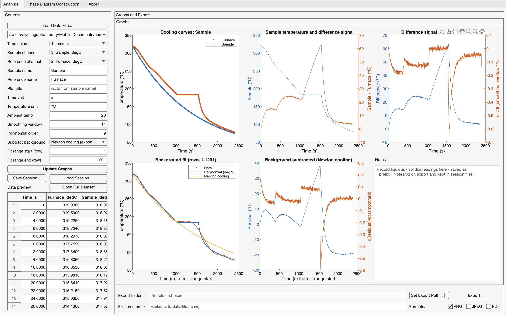

Locates liquidus and solidus arrests in thermocouple cooling curves by background subtraction and derivative analysis, and builds experimental phase diagrams.
sample_data/
User guide Video tutorial (YouTube)
